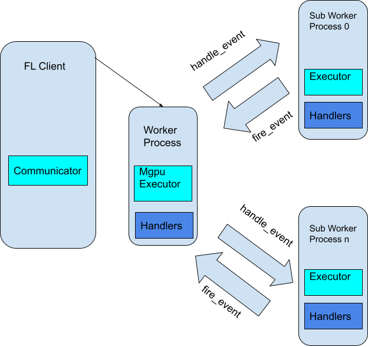

Executors¶

An Executor in NVIDIA FLARE is a type of FLComponent for FL clients that has an
execute method that produces a Shareable from an input Shareable. The execute method also takes a str for
task_name, FLContext, and abort_signal.
class Executor(FLComponent, ABC):
@abstractmethod
def execute(self, task_name: str, shareable: Shareable, fl_ctx: FLContext, abort_signal: Signal) -> Shareable:
pass
Examples for Executors are Trainer and Validator.
The source code for some example implementations can be found in the example apps. On clients, tasks can be configured
for Executors in config_fed_client.json:
{
"format_version": 2,
"handlers": [],
"executors": [
{
"tasks": [
"train",
"submit_model"
],
"executor": {
"path": "np_trainer.NPTrainer",
"args": {}
}
},
{
"tasks": [
"validate"
],
"executor": {
"path": "np_validator.NPValidator"
}
}
],
"task_result_filters": [],
"task_data_filters": [],
"components": []
}
The above configuration is an example from hello_numpy. Each task can only be assigned to one Executor.
Multi-Process Executor¶
MultiProcessExecutor is designed to
easily allow the FL executor to support multi-processes execution. The behavior of the Executor remains the same
including the firing and handling of FL events. MultiProcessExecutor allows researchers to focus on the training and
execution logic instead of worrying about how to make use of multiple processes or deal with multi-GPU training.
During the execution, any event fired from other components will be relayed from the MultiProcessExecutor to all the sub-worker processes. Any component which listens to the event in the sub-worker processes can handle the event accordingly. Also, any event fired by the FL component in the sub-worker processes will be relayed by the MultiProcessExecutor to all other components to handle.
MultiProcessExecutor keeps the same FL Executor API signature. When turning the FL executor into MultiProcessExecutor, configure the task executor to use MultiProcessExecutor (currently PTMultiProcessExecutor is the only implemented MultiProcessExecutor), and configure the existing executor as the “executor_id”, and the number of processes to use.
{
"executors": [
{
"tasks": [
"train"
],
"executor": {
"path": "nvflare.app_common.pt.pt_multi_process_executor.PTMultiProcessExecutor",
"args": {
"executor_id": "trainer",
"num_of_processes": 2,
"components": [
{
"id": "trainer",
"path": "medl.apps.fed_learn.trainers.client_trainer.ClientTrainer",
"args": {
"local_epochs": 5,
"steps_aggregation": 0,
"model_reader_writer": {
"name": "PTModelReaderWriter"
}
}
}
]
}
}
}
],
}